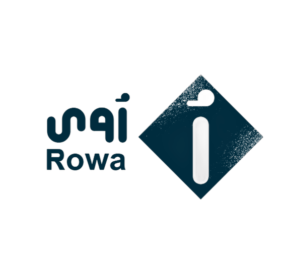

نظرًا لرغبة الجهة المُشرفة (الوصي أو الجهة النظامية) في استثمار أموال الأيتام لدى المصرف بطريقة شرعية مسؤولة، فقد اتفق الطرفان على أن يتم تشغيل الأموال ضمن منتج استثماري خاص يُسمى "رُؤى"، يدار وفق صيغة المضاربة الشرعية، ويُعد هذا التمهيد جزءًا لا يتجزأ من الشروط والأحكام ومكملاً لها.